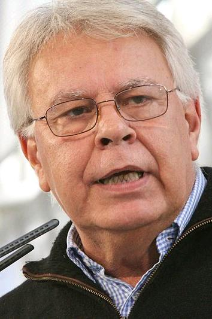

España firma su adhesión a la Comunidad Europea
Felipe González rubricó en el Salón de Columnas el tratado que hace de España miembro de pleno derecho desde el 1 de enero. Portugal firmó hoy en Lisboa. La Europa de los Diez será la de los Doce.

El Salón de Columnas del Palacio Real, que ha visto siglos de ceremonias, acogió esta tarde una firma que los presentes coincidían en llamar histórica sin miedo a la palabra. Ante el Rey, el presidente del Gobierno, don Felipe González, y el ministro de Asuntos Exteriores, don Fernando Morán, rubricaron con los representantes de los Diez el Tratado de Adhesión de España a las Comunidades Europeas. Esta misma mañana, en el monasterio de los Jerónimos de Lisboa, Portugal estampó la suya. Desde el uno de enero próximo, la Europa comunitaria será la Europa de los Doce, y España, miembro de pleno derecho.
La firma corona una negociación de casi ocho años, abierta con la solicitud presentada en 1977 por el primer Gobierno de la democracia y erizada de capítulos arduos: la agricultura, la pesca, la siderurgia, los períodos transitorios que escalonarán la entrada de productos y trabajadores españoles. Hubo momentos en que el ingreso pareció alejarse, vetos de hecho y madrugadas de regateo en Bruselas. El documento firmado hoy tiene centenares de artículos y anexos que casi nadie leerá enteros; su sentido, en cambio, lo entiende cualquiera: España deja de mirar a Europa desde la ventanilla y pasa a sentarse a la mesa.
Para medir la jornada conviene recordar de dónde se viene. En 1962, España llamó por primera vez a la puerta del Mercado Común y la respuesta fue el silencio: aquella Europa no admitía en su club a quien no fuera una democracia. Hicieron falta la muerte de Franco, una Constitución votada por todos y varias elecciones generales para que la candidatura española dejara de ser incómoda. Por eso, en el habla de la calle, Europa significa desde hace años algo más que un mercado: significa modernidad, democracia, normalidad; la palabra que resume lo que este país lleva década y media queriendo ser.
En los discursos de esta tarde sonaron las palabras esperadas, reconciliación, futuro, vocación europea, pero las estampas menudas dijeron acaso más: funcionarios veteranos de Asuntos Exteriores que confesaban haber trabajado veinte años para este día, traductores repasando las versiones del tratado en las lenguas comunitarias, y en la calle Bailén curiosos aplaudiendo a las delegaciones sin distinguir muy bien qué bandera era de quién. Cuentan que más de un negociador se emocionó al ver las firmas secas sobre el papel. Los agricultores, entre tanto, hacen cuentas con inquietud: la Europa que abre mercados también trae competidores.
No conviene que el júbilo escriba solo la crónica. La adhesión traerá exigencias duras: industrias que deberán reconvertirse, campos que competirán con los más productivos del continente, precios que se moverán. Nadie ha prometido que ser Europa salga gratis. Pero pocas veces un país firma un tratado que es a la vez un programa y un espejo: España se obliga hoy a parecerse a aquello que durante décadas solo pudo admirar desde fuera. Quedan por delante los plazos, las letras pequeñas y los desencantos inevitables; queda también, desde esta tarde, una certeza nueva: el largo aislamiento español ha terminado con una firma.